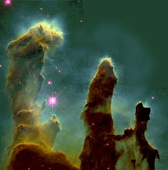

|
The image shows a section of the Eagle Nebula which surrounds star cluster M16 (also designated NGC6611). It is in the constellation Serpens at about 6500 light years (2000 parsecs) from Earth. It is classified as an emission nebula. It consists predominantly of ionized hydrogen and is referred to as an H II region because of the emission spectrum of ionized hydrogen. The collection of hot, bright O and B stars at its center provide the ultraviolet ionizing radiation which causes the hydrogen to be luminous.
|

Show larger image
NASA image
|